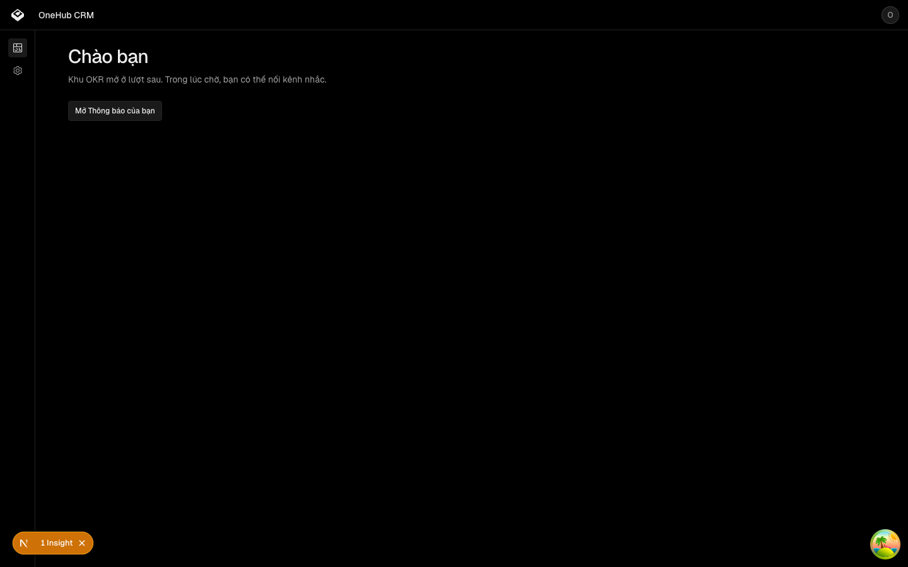
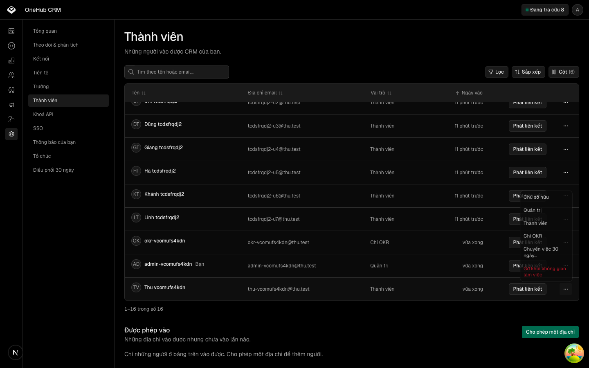
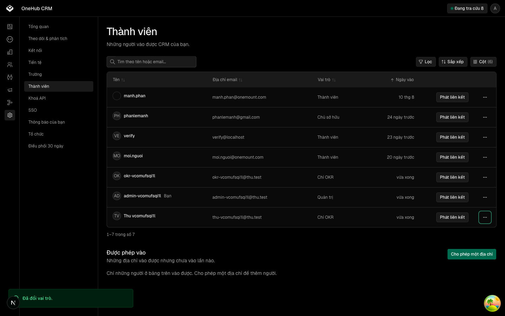

| Eval | Tiêu chí | Loại | Verdict | run_id | verified_at |
|---|---|---|---|---|---|
| E1 | AC-1 | test | PASS | mufsq4414l2e | 2026-09-24T17:18:40.434Z |
| E2 | AC-2 | test | PASS | mufsq602bhu9 | 2026-09-24T17:18:42.882Z |
| E3 | AC-3 | test | PASS | mufsq8mbja0g | 2026-09-24T17:18:46.274Z |
| E4 | AC-4 | test | PASS | mufsqayoqj6k | 2026-09-24T17:18:49.312Z |
| E5 | AC-5 | test | PASS | mufsqc76u5ss | 2026-09-24T17:18:50.910Z |
| E6 | AC-6 | test | PASS | mufsqdypzoww | 2026-09-24T17:18:53.202Z |
| E7 | AC-6 | test | PASS | mufsqeudcim1 | 2026-09-24T17:18:54.342Z |
| E8 | AC-7 | test | PASS | mufsqfnh7ifa | 2026-09-24T17:18:55.387Z |
| E9 | AC-8 | test | PASS | minted-vai-chi-okr-E9-r2-mufsqh0j | 2026-09-24T17:18:57.172Z |
| E9b | AC-8 | test | PASS | mufsqh1dbjq2 | 2026-09-24T17:18:57.188Z |
| E10 | AC-9 | test | PASS | minted-vai-chi-okr-E10-r2-mufsqhwu | 2026-09-24T17:18:58.335Z |
| E11 | AC-9 | ui-check | PASS | minted-vai-chi-okr-E11-r2-mufsr5of | 2026-09-24T17:18:58.350Z |
| E12 | AC-10 | ui-check | PASS | minted-vai-chi-okr-E11-r2-mufsr5of | 2026-09-24T17:18:58.350Z |
| E13 | AC-10 | script | PASS | minted-vai-chi-okr-E11-r2-mufsr5of | 2026-09-24T17:18:58.350Z |
| E14 | AC-11 | test | PASS | mufsr5pt26bx | 2026-09-24T17:19:29.151Z |
| E15 | AC-12 | test | PASS | mufsr7kc6igh | 2026-09-24T17:19:31.561Z |
| E16 | AC-13 | test | PASS | mufsr94uxerc | 2026-09-24T17:19:33.597Z |
AC-1: Given một thành viên mang vai `okr` đăng nhập bằng đường sản phẩm thật (mật khẩu, qua móc tạo phiên của Better Auth), When họ gọi TỪNG thủ tục có trong sổ router đang chạy của API (query bằng GET, mutation bằng POST, đầu vào rỗng), Then tập thủ tục KHÔNG trả FORBIDDEN với thông điệp phạm vi có tên bằng ĐÚNG tập khai trong bài kiểm — thủ tục của các router phạm vi `chung` và `to-chuc` cộng hai ngoại lệ sẵn có `workspace.get`, `sso.signInOptions` — không hơn không kém; mọi thủ tục còn lại trả FORBIDDEN với đúng thông điệp phạm vi. Sổ router phải có ≥ 50 thủ tục, tập rút lúc chạy, không viết tay.
Loaded Prisma config from prisma.config.ts. Prisma schema loaded from prisma/schema.prisma. 1 pass 9 filtered out 103 expect() calls Ran 1 test across 1 file. [1.61s]
AC-2: Given cùng người mang vai `okr` tạo được một khoá API qua thủ tục tạo khoá của chính họ (thủ tục này thuộc phạm vi `chung` nên phải trả 2xx), When họ gọi cùng ma trận tRPC bằng khoá đó VÀ gọi mọi đường của cầu REST rút từ tài liệu OpenAPI lúc chạy (≥ 30 đường), Then tập không bị từ chối về phạm vi bằng đúng tập khai của AC-1 (chiếu sang tên đường REST), và mọi đường khác trả 403 với cùng thông điệp phạm vi.
Loaded Prisma config from prisma.config.ts. Prisma schema loaded from prisma/schema.prisma. 1 pass 9 filtered out 8 expect() calls Ran 1 test across 1 file. [2.33s]
AC-3: Given một thành viên vai `member` và một người vai `admin`, When họ gọi cùng ma trận tRPC của AC-1, Then không hàng nào mang thông điệp phạm vi và sáu thủ tục dữ liệu mẫu (`contacts.list`, `companies.list`, `deals.list`, `activities.myTasks`, `search.quick`, `campaigns.list`) trả 200. Đây là đối chứng dương: một bản vá chặn nhầm thành viên vẫn đỏ ở đây.
Loaded Prisma config from prisma.config.ts. Prisma schema loaded from prisma/schema.prisma. 1 pass 9 filtered out 18 expect() calls Ran 1 test across 1 file. [2.10s]
AC-4: Given một thủ tục gắn lớp kiểm tư cách trần — chưa khai phạm vi dữ liệu —, When người vai `okr` gọi nó, Then bị từ chối FORBIDDEN với thông điệp phạm vi; When thành viên vai `member` gọi nó, Then đi qua tới thủ tục. Chặn-mặc-định là hành vi của lớp nền, không của bảng khai.
Loaded Prisma config from prisma.config.ts. Prisma schema loaded from prisma/schema.prisma. 1 pass 9 filtered out 3 expect() calls Ran 1 test across 1 file. [697.00ms]
AC-5: Given cookie đăng nhập thật của người vai `okr`, When proxy THẬT của ứng dụng (hỏi API thật) nhận yêu cầu tới `/contacts`, `/deals`, `/onboarding`, `/chat` và `/settings/members`, Then mỗi yêu cầu được chuyển tới trang «ngoài phạm vi» dưới slug của kho; When nhận yêu cầu tới `/` và `/settings/notifications`, Then KHÔNG chuyển tới trang đó; When yêu cầu `/settings` trần, Then chuyển tới `/settings/notifications`; và thành viên vai `member` gõ `/contacts` không bị chuyển. Proxy vẫn đọc được tư cách: `workspace.get` trả 200 với `viewerRole: "okr"`. (cross-layer)
Loaded Prisma config from prisma.config.ts. Prisma schema loaded from prisma/schema.prisma. 1 pass 9 filtered out 20 expect() calls Ran 1 test across 1 file. [1368.00ms]
AC-6: Given một người có phiên mang vai `okr`, When họ gọi đường nối sang trợ lý AI (`/eve/v1/...`), Then đường nối trả 403 với thông điệp phạm vi và KHÔNG chuyển lời gọi nào sang trợ lý AI; thành viên gọi cùng đường thì được chuyển đúng một lần. Và ở phía trợ lý AI: When kênh xác thực của trợ lý AI nhận một token cầu nối hợp lệ mà chủ token là người vai `okr` trong cơ sở dữ liệu, Then kênh không xác thực người đó (trả null), còn token của thành viên thì thành principal người dùng.
$ bun scripts/test-db.ts Loaded Prisma config from prisma.config.ts. Prisma schema loaded from prisma/schema.prisma. 2 pass 3 expect() calls Ran 2 tests across 1 file. [243.00ms]
AC-6: Given một người có phiên mang vai `okr`, When họ gọi đường nối sang trợ lý AI (`/eve/v1/...`), Then đường nối trả 403 với thông điệp phạm vi và KHÔNG chuyển lời gọi nào sang trợ lý AI; thành viên gọi cùng đường thì được chuyển đúng một lần. Và ở phía trợ lý AI: When kênh xác thực của trợ lý AI nhận một token cầu nối hợp lệ mà chủ token là người vai `okr` trong cơ sở dữ liệu, Then kênh không xác thực người đó (trả null), còn token của thành viên thì thành principal người dùng.
$ bun scripts/test-db.ts Loaded Prisma config from prisma.config.ts. Prisma schema loaded from prisma/schema.prisma. 3 pass 3 expect() calls Ran 3 tests across 1 file. [166.00ms]
AC-7: Given một quản trị và một thành viên, When quản trị đổi vai thành viên đó thành `okr` qua thủ tục đổi vai, Then cột `role` của dòng thành viên đọc lại từ cơ sở dữ liệu là `okr`; When quản trị cho phép một địa chỉ mới với vai `okr` rồi người đó đăng nhập, Then dòng thành viên được tạo với vai `okr` — không bị hạ về `member`; When một thành viên thường thử đổi vai người khác thành `okr`, Then bị từ chối; When chủ sở hữu duy nhất bị đổi thành `okr`, Then bị từ chối với thông điệp cần một chủ sở hữu sẵn có.
Loaded Prisma config from prisma.config.ts. Prisma schema loaded from prisma/schema.prisma. 1 pass 9 filtered out 8 expect() calls Ran 1 test across 1 file. [915.00ms]
AC-8: Given một người vai `okr` mà mọi dòng đăng nhập đều là Google và không dòng nào có quyền hộp thư, When ứng dụng quyết có dựng tường xin quyền hộp thư không, Then không dựng (không chuyển tới `/grant-access`) — đo ở chính chỗ nối của ứng dụng đọc vai từ cơ sở dữ liệu, không chỉ ở hàm thuần; cùng dòng đăng nhập nhưng vai `member` thì vẫn dựng tường. (cross-layer)
bun test v1.3.10 (30e609e0) 3 pass 8 expect() calls Ran 3 tests across 1 file. [5.00ms]
AC-8: Given một người vai `okr` mà mọi dòng đăng nhập đều là Google và không dòng nào có quyền hộp thư, When ứng dụng quyết có dựng tường xin quyền hộp thư không, Then không dựng (không chuyển tới `/grant-access`) — đo ở chính chỗ nối của ứng dụng đọc vai từ cơ sở dữ liệu, không chỉ ở hàm thuần; cùng dòng đăng nhập nhưng vai `member` thì vẫn dựng tường. (cross-layer)
$ bun scripts/test-db.ts Loaded Prisma config from prisma.config.ts. Prisma schema loaded from prisma/schema.prisma. 3 pass 3 expect() calls Ran 3 tests across 1 file. [258.00ms]
AC-9: Given người vai `okr` đã đăng nhập, When họ nhìn ứng dụng ở khổ 375 và 1440, tiếng Việt và tiếng Anh, Then thanh điều hướng có đúng hai mục Tổng quan và Cài đặt (không Công ty, Cá nhân, Thoả thuận, Chiến dịch, 30 ngày đầu, Hội thoại), Tổng quan không có ô số liệu đối tác nào và có liên kết tới Thông báo của bạn, thanh bên Cài đặt có đúng hai mục Thông báo của bạn và Khoá API, gõ tay `/contacts` thấy trang «ngoài phạm vi» có liên kết về Tổng quan; thành viên thường thấy tám mục như hôm nay. Ba hàm thuần quyết mục rail, mục Cài đặt và điều hướng theo vai đo được không cần trình duyệt.
bun test v1.3.10 (30e609e0) 3 pass 27 expect() calls Ran 3 tests across 1 file. [7.00ms]
AC-9: Given người vai `okr` đã đăng nhập, When họ nhìn ứng dụng ở khổ 375 và 1440, tiếng Việt và tiếng Anh, Then thanh điều hướng có đúng hai mục Tổng quan và Cài đặt (không Công ty, Cá nhân, Thoả thuận, Chiến dịch, 30 ngày đầu, Hội thoại), Tổng quan không có ô số liệu đối tác nào và có liên kết tới Thông báo của bạn, thanh bên Cài đặt có đúng hai mục Thông báo của bạn và Khoá API, gõ tay `/contacts` thấy trang «ngoài phạm vi» có liên kết về Tổng quan; thành viên thường thấy tám mục như hôm nay. Ba hàm thuần quyết mục rail, mục Cài đặt và điều hướng theo vai đo được không cần trình duyệt.

-- tiền đề làn đo: contextDevApiKey đã có sẵn, không đụng -- tiền đề làn đo: ảnh đại diện đã có sẵn, không đụng -- tiền đề làn đo: workspace đã có tên miền được phép, không đụng man-chi-okr: 62 khang dinh, 0 hong $ bun scripts/dev-session.ts "okr-vcomufsc8ka@thu.test" $ bun scripts/dev-session.ts "admin-vcomufsc8ka@thu.test"
AC-10: Given quản trị mở Cài đặt › Thành viên, When họ mở menu vai của một thành viên, Then menu có mục «Chỉ OKR»; When họ chọn nó, Then dòng đổi nhãn thành «Chỉ OKR» và cột `role` của dòng thành viên trong cơ sở dữ liệu là `okr`; hộp thoại cho phép địa chỉ cũng có «Chỉ OKR» trong ô vai. (cross-layer)

-- tiền đề làn đo: contextDevApiKey đã có sẵn, không đụng -- tiền đề làn đo: ảnh đại diện đã có sẵn, không đụng -- tiền đề làn đo: workspace đã có tên miền được phép, không đụng man-chi-okr: 62 khang dinh, 0 hong $ bun scripts/dev-session.ts "okr-vcomufsc8ka@thu.test" $ bun scripts/dev-session.ts "admin-vcomufsc8ka@thu.test"
AC-10: Given quản trị mở Cài đặt › Thành viên, When họ mở menu vai của một thành viên, Then menu có mục «Chỉ OKR»; When họ chọn nó, Then dòng đổi nhãn thành «Chỉ OKR» và cột `role` của dòng thành viên trong cơ sở dữ liệu là `okr`; hộp thoại cho phép địa chỉ cũng có «Chỉ OKR» trong ô vai. (cross-layer)

-- tiền đề làn đo: contextDevApiKey đã có sẵn, không đụng -- tiền đề làn đo: ảnh đại diện đã có sẵn, không đụng -- tiền đề làn đo: workspace đã có tên miền được phép, không đụng man-chi-okr: 62 khang dinh, 0 hong $ bun scripts/dev-session.ts "okr-vcomufsc8ka@thu.test" $ bun scripts/dev-session.ts "admin-vcomufsc8ka@thu.test"
AC-11: Given bất kỳ lời gọi tRPC nào của một thành viên, When lớp ghi nhật ký in dòng `tRPC <type> <path> <outcome>`, Then dòng đó mang thêm `role` (vai người gọi) và `phamVi` (phạm vi dữ liệu của router, hoặc null khi chưa khai) — để ngưỡng «0 lượt đọc được dữ liệu đối tác của vai chỉ OKR» đếm được từ nhật ký; một lời gọi bị từ chối về phạm vi vẫn in `role: okr`, `phamVi: doi-tac`, `outcome: err`.
Loaded Prisma config from prisma.config.ts. Prisma schema loaded from prisma/schema.prisma. 1 pass 9 filtered out 3 expect() calls Ran 1 test across 1 file. [834.00ms]
AC-12: Given người vai `okr` và danh sách MỌI thủ tục ghi (mutation) của các router phạm vi `chung` và `to-chuc` rút từ sổ router lúc chạy, When họ gọi từng thủ tục với đầu vào HỢP LỆ tối thiểu (để lời từ chối không thể là lỗi đầu vào), Then tập thủ tục KHÔNG bị từ chối bằng ĐÚNG tập «tự phục vụ» viết trước — tạo và thu hồi khoá API của chính mình, tạo mã nối Zalo, gỡ Zalo của mình, lưu ưu tiên kênh nhắc của mình, gửi thư thử vào kênh của mình — còn mọi thủ tục ghi cấu hình hệ thống (cài đặt chung, tiền tệ, SSO, bot Zalo, không gian làm việc, cây tổ chức) trả 403 theo vai quản trị; thành viên vai `member` gọi ba thủ tục ghi của cài đặt chung (model trợ lý AI, khoá research, thời gian lưu trữ) cũng bị từ chối — hôm nay chúng mở cho mọi thành viên do sót, lượt này đóng.
Loaded Prisma config from prisma.config.ts. Prisma schema loaded from prisma/schema.prisma. 1 pass 9 filtered out 8 expect() calls Ran 1 test across 1 file. [1056.00ms]
AC-13: Given cookie đăng nhập thật của người vai `okr` và danh sách MỌI đường HTTP của API rút lúc chạy từ bộ định tuyến của máy chủ, trừ `/api/trpc/*` và `/rest/*` (đã đo ở AC-1, AC-2), When gọi từng đường với đúng phương thức và không đầu vào, Then tập đường trả 2xx bằng ĐÚNG tập khai trước trong bài kiểm (kiểm tra sức khoẻ, hồ sơ và phiên của chính mình, tài liệu OpenAPI, các đường của Better Auth) — không đường nào ngoài tập đó trả dữ liệu cho vai này; các đường nội bộ có bí mật trả 401/503 như hôm nay. Bài đỏ nếu danh sách đường dưới 20 (chống rỗng xanh câm).
code: "state_not_found"
at /Users/manhphan/dev/crm/.claude/worktrees/vai-chi-okr/node_modules/.bun/better-auth@1.6.25+6f7f63a766f3d984/node_modules/better-auth/dist/state.mjs:79:24
1 pass
9 filtered out
2 expect() calls
Ran 1 test across 1 file. [1148.00ms]